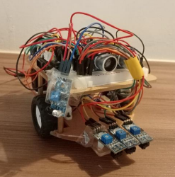
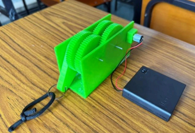
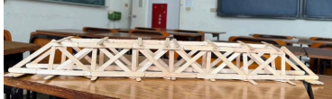
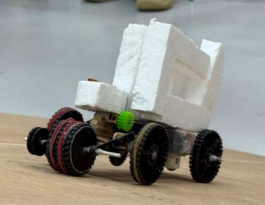

Senior Undergraduate Student
Biomechatronics Engineering, National Taiwan University
I am a senior undergraduate student at National Taiwan University, majoring in Biomechatronics Engineering. My interests include machine learning, data analysis, and system implementation.
Principles and Applications of Microcontrollers-Mechatronics (1)
Designed and implemented an autonomous vehicle integrating infrared and ultrasonic sensors, enabling line-following and maze-solving capabilities.
View project report (PDF)Machine Design
Designed gearbox structures to improve load capacity and torque transmission efficiency.
View project report (PDF)Machine Design
Built bridge structures using wooden sticks, optimizing load distribution to enhance load-to-weight ratio.
View project report (PDF)Machine Design
Participated in cross-disciplinary design and testing of a robot capable of completing wind tunnel, slope climbing, narrow bridge, and watercourse challenges.
View project report (PDF)Email: b11611050@ntu.edu.tw
GitHub: https://github.com/tingyu1514